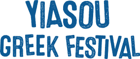

ΓΕΙΑ ΣΟΥ!
Welcome to the homepage for the Ελληνική Κληρονομία Οργάνωση (Greek Heritage Organization) of UNC Charlotte. We are a club, created in October of 2024, to promote diversity and inclusion on campus. We are dedicated to sharing Greek culture with the campus community and beyond. We are planning to host events, such as Greek Night, to showcase Greek music, dance, and food. We also plan to host educational events, such as lectures and workshops, to teach others about Greek history, traditions, and language. We are open to all, Greek and not.
Our Mission:
Created in late 2024, our mission is to promote Greek heritage on campus, creating a space for both Greek heritage students and non-Greek Heritage students alike. We are dedicated to sharing Greek culture with the campus community and beyond. We are planning to host events, such as Greek Night, to showcase Greek music, dance, and food. We also plan to host educational events, such as lectures and workshops, to teach others about Greek history, traditions, and language. We are open to all, Greek and not. A large facet is to offer Greek culure promotion as opposed the the general concept of Greek life. We are not a fraternity or sorority, but rather a cultural organization.
Future Partners:
 We are planning to parter with the Holy Trinity Greek Orthodox Church in Charlotte, the yearly Yiasou Greek Festival, as well as the Hellenic-American Cultural Foundation (HCAF)
This is in addition to services and parters available to us on campus. If you would like to parter with us, please contact us using the information on this page
Join Us:
If you would like to join UNC Charlotte's first Greek Heritage organization, you can contact us here, as well as by joining our organization on Niner Engage!
AJAX data loading to be implmented, so that this can be changed at the club's discretion.

Here's VP Chet Allen and Treasurer Nick Pekatos at the Winter Club Showcase!